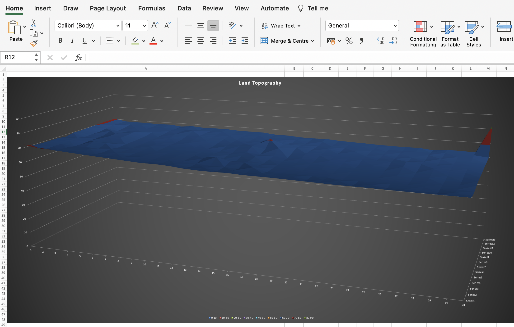

April 25, 2022
This is a Kaggle Project that analyses sustainable energy indexes across the glob
Data cleaning, processing, analysis and visualization is performed
in a Python environment.


Calculating Volume Excavation or Earthfill using Simpson's One-Third Rule of Integration. Numberical calculations are performed in a python environment
this exploratory data analysis offers valuable insights into India's daily electric power generation landscape from September 2017 to August 2020. The dataset encompasses three primary power sources: Thermal (coal, natural gas, liquid hydrocarbon), Hydroelectric, and Nuclear.
Manoranja was at work when his wife encountered Cardiac arrest. Manoranjan had learned about CPR during mandatory first aid training at his workplace, yet he couldn't pass this knowledge on to his family. The profound impact of the gap between knowing and not knowing now shadows Manoranjan's existence.

Far beyond its reputation as a spreadsheet program, Excel emerges as a versatile ally, empowering users to optimize pump and pipe selections, calculate earthwork volumes efficiently, and strategically allocate jobs. By delving into these practical applications, we aim to showcase the profound impact Excel can have in streamlining complex engineering tasks, demonstrating its versatility as a formidable asset in the hands of designers, analysts, and project managers.

Representing multidimensional data within the confines of a two-dimensional observation space, whether on paper or a screen, poses a formidable challenge. Over time, various tools and methods, including star plots, parallel coordinates, and scatterplot matrices, have been developed to adeptly convey multiple attribute information through a singular graph. In this context, I have explained the strength and limitations of the scatterplot matrix as one such tool, using a car dataset as an illustrative example. Python and Javascript serve as the primary languages employed for crafting these visualizations.

Cricket enthusiasts often rely on batting averages to gauge a batsman's skill, but this widely-used metric has its drawbacks. This blog introduces a game-changing statistic—the batting index—which combines batting averages with the standard deviation to measure both volume and consistency of runs scored.